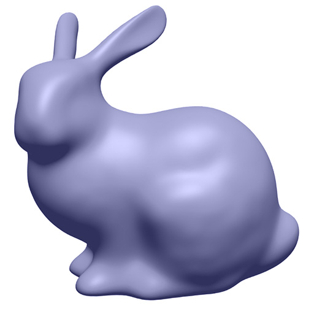
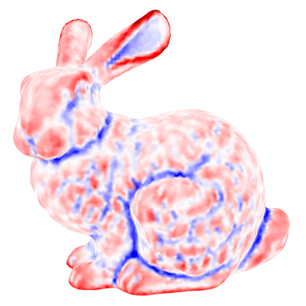
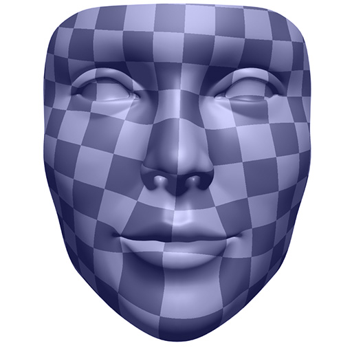
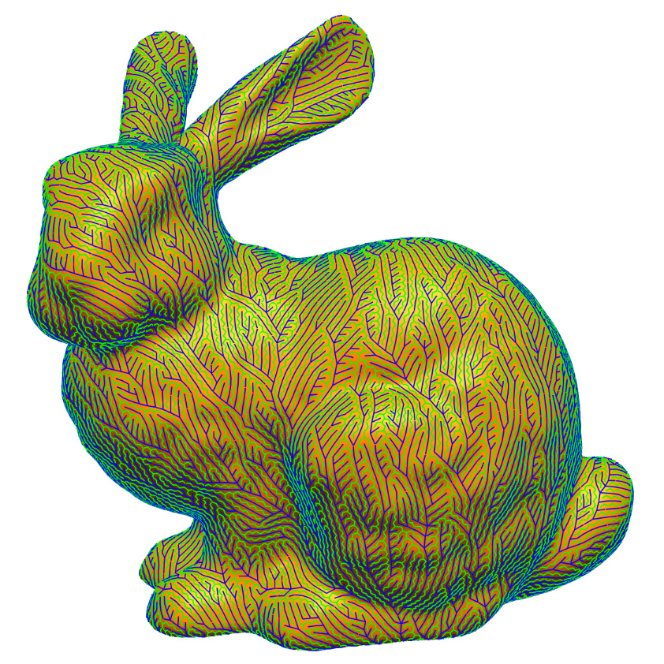
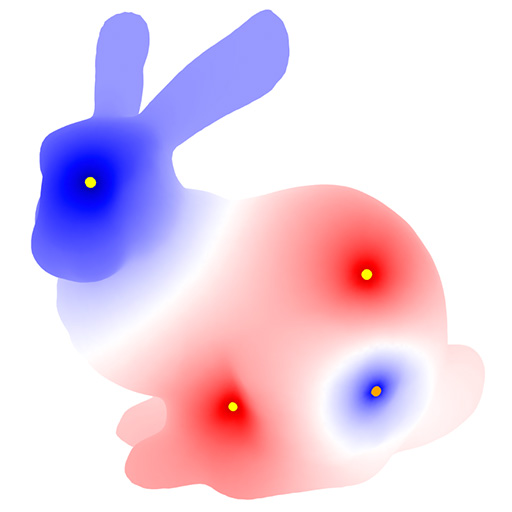
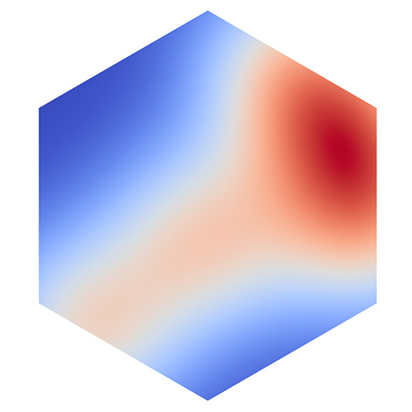
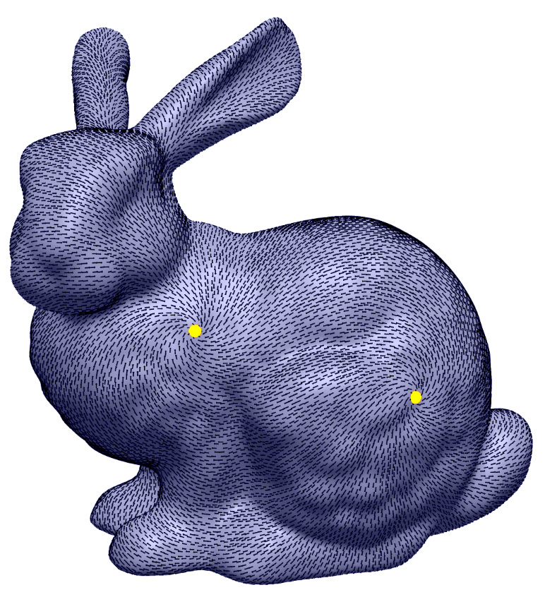

{kind=link}
Demo running on iPhone 6
{kind=link}
Editing geometry processing code in-browser (here just stretching by 2x)
About
geometry-processing-js is a fast and flexible framework for 3D geometry processing on the web! Easy integration with HTML/WebGL makes it particularly suitable for things like mobile apps, online demos, and course content. For many tasks, performance comes within striking distance of native (C++) code. Plus, since the framework is pure JavaScript, no compilation or installation is necessary: just copy the files and run from any web browser, on any platform (including mobile). Moreover, geometry processing algorithms can be edited in the browser (using for instance the JavaScript Console in Chrome). So open up one of the demos and start editing! geometry-processing-js is developed by and maintained by the Geometry Collective at Carnegie Mellon University.
At a high level, the framework is divided into three parts - a flexible halfedge mesh data structure, an optimized linear algebra package (based on Eigen), and code for various geometry processing algorithms. Each algorithm comes with its own viewer for rendering.
Detailed documentation and unit tests for each of these parts can be found in the docs and tests directories of this repository.
We're just getting rolling here, so stay tuned for more! :-)
Demos
Click on the images below to try out some demos now! Since the algorithms are implemented in native JavaScript, they can be edited in-browser using developer tools like the Console in Google Chrome. (Note that the GUIs for these demos are just simple examples; any GUI can be used on top of the core geometry library.)|  |  | |
|  |  |  |
|  |  |
Code Snippet
Since geometry-processing-js already implements many of the fundamental operations needed for geometry processing, it's easy to get up and running very quickly. Here's a short snippet showing how to solve a Poisson equation on a mesh loaded by the GUI, which uses built-in routines for constructing the Laplace and mass matrices:// assign an index to each vertex of the mesh
let vertexIndex = indexElements(geometry.mesh.vertices);
// build cotan-Laplace and mass matrices
let A = geometry.laplaceMatrix(vertexIndex);
let M = geometry.massMatrix(vertexIndex);
let rhs = M.timesDense(rho);
// solve Poisson equation with a given right-hand side rhs
let llt = A.chol();
let phi = llt.solvePositiveDefinite(rhs);
Documentation
Read the online docs here to get a sense of how geometry-processing-js works. (A list of modules and classes can be found in the menu at top). The quickest way to start playing around is to modify one of the existing examples (in the projects subdirectory); small usage examples for individual classes can be found throughout the documentation.
Here are some slides from a short tutorial at the AMS Short Course on Discrete Differential Geometry.
Getting started
- Clone the repository and change into the projects directory
git clone https://github.com/geometrycollective/geometry-processing-js.git cd geometry-processing-js/projects - Open the index.html file in any of the sub directories in a browser of your choice (Chrome and Firefox usually provide better rendering performance than Safari).
Dependencies (all included)
-
Linear Algebra - A wrapper around the C++ library Eigen compiled to asm.js with emscripten. Future updates will compile the more optimized sparse matrix library Suitesparse to asm.js. (Note that this wrapper can also be used for other, non-geometric projects which seek to use Eigen on the web; you can find the standalone release here)
-
Rendering - three.js
About Javascript
The implementation of geometry-processing-js attempts to minimize the use of obscure Javascript language features. It should not be too difficult for anyone with experience in a dynamic language like Python or familiar with the principles of Object Oriented Programming to get a handle on Javascript syntax by reading through some of the code in this framework. The documentation contains examples specific to this framework which will also be of help. For a more formal introduction to Javascript, checkout this really nice tutorial.
Author
Rohan Sawhney (rohansawhney@cs.cmu.edu)
Design inspiration: Nick Sharp, Keenan Crane
License
Support
This work is supported in part by National Science Foundation award #1717320. Any opinions, findings, and conclusions or recommendations expressed in this material are those of the author(s) and do not necessarily reflect the views of the National Science Foundation